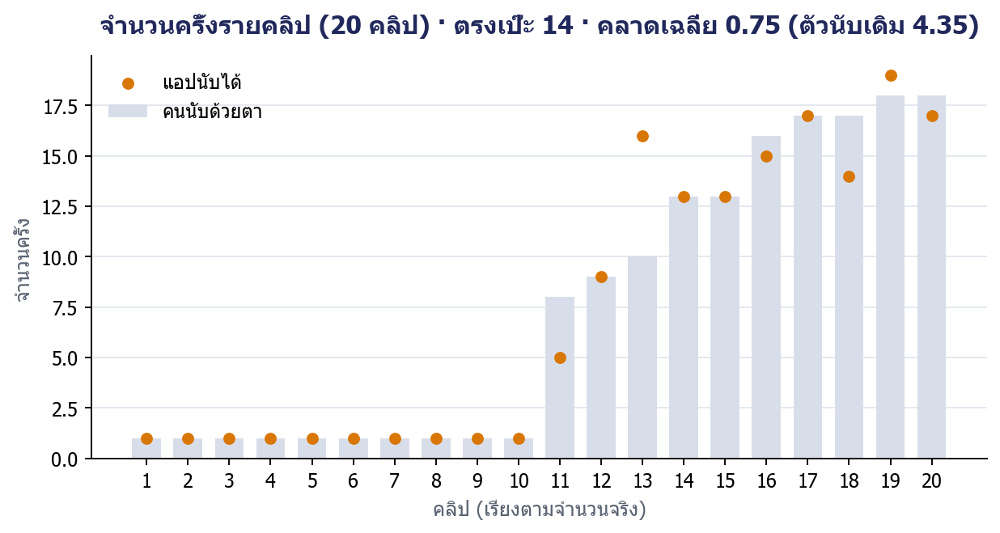
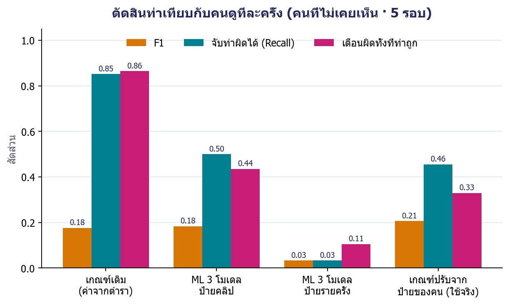

| F1 |
|---|
| MediaPipe Pose Landmarker lite | ||
| RF + LSTM + 1D-CNN |
Random Forest
LSTM
1D-CNN
| Precision | Recall | F1 | Accuracy |
|---|




Pai, S. A., PN, P., P, A., Mashetty, A., Kamath, P., Bhandary, R., & Prashanth, D. S. (2026). A Multi-View Raw Video Dataset of Seven Fitness Exercises with Good/Bad Form Labels (Version 3). Mendeley Data. doi:10.17632/kgbb3yn47p.3 · CC BY 4.0
Salama, M. A. LSTM Exercise Classification: Push Up Videos. Kaggle. kaggle.com/datasets/mohamadashrafsalama/pushup · CC BY-NC-SA 4.0